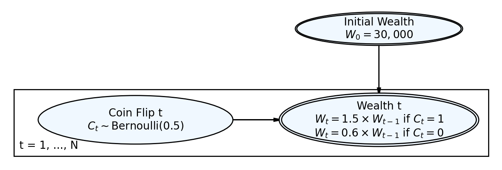

Simulation Challenge
Starter Template with To-Dos
:::
The Investment Game (Brief)
You have the opportunity to buy-in to this game next week with $30,000. Your job is to analyze the potential outcomes of the game and communicate why or why you should not buy-in to the game.
Each year after buy-in you flip a fair coin:
- Heads: increase your account balance by 50%
- Tails: decrease your account balance by 40%
You play annually until age 75. Your mission is to analyze outcomes and communicate insights clearly.
Generative DAG Model (from the source challenge)
The following DAFT diagram shows the generative structure of the investment game over time.
1) Expected Value After 1 Flip
After one flip, the expected value of your account balance is greater than $30,000. The calculation shows that with a fair coin flip (50% probability for each outcome), you have a 50% chance of ending up with $45,000 (heads: +50%) and a 50% chance of ending up with $18,000 (tails: -40%). The expected value is $31,500, which represents a gain of $1,500 or 5% above your initial buy-in.
Based on expected value alone, this simple analysis suggests you should buy-in to the game, as it offers a positive expected return. However, this single-metric analysis overlooks the substantial risk: you have a 50% chance of losing $12,000 (40% of your investment) in just one flip. This highlights the importance of considering both expected value and risk when making investment decisions, especially when multiple periods are involved.
# Initial buy-in
initial_balance = 30000
# After one flip:
# - Heads (50%): balance increases by 50% → multiply by 1.5
# - Tails (50%): balance decreases by 40% → multiply by 0.6
balance_heads = initial_balance * 1.5
balance_tails = initial_balance * 0.6
print(f"Initial balance: ${initial_balance:,.2f}")
print(f"\nAfter one flip:")
print(f" Heads (50% probability): ${balance_heads:,.2f}")
print(f" Tails (50% probability): ${balance_tails:,.2f}")
# Expected value calculation
prob_heads = 0.5
prob_tails = 0.5
expected_value = prob_heads * balance_heads + prob_tails * balance_tails
print(f"\nExpected Value (EV) after one flip:")
print(f" EV = 0.5 × ${balance_heads:,.2f} + 0.5 × ${balance_tails:,.2f}")
print(f" EV = ${expected_value:,.2f}")
# Compare to initial balance
difference = expected_value - initial_balance
percent_gain = (difference / initial_balance) * 100
print(f"\nComparison to initial balance:")
print(f" EV - Initial = ${difference:,.2f}")
print(f" Gain as % of buy-in: {percent_gain:.2f}%")
# Conclusion
print(f"\nConclusion:")
if expected_value > initial_balance:
print(f" Expected value (${expected_value:,.2f}) > Initial balance (${initial_balance:,.2f})")
print(f" The expected value suggests a positive return of {percent_gain:.2f}%")
elif expected_value < initial_balance:
print(f" Expected value (${expected_value:,.2f}) < Initial balance (${initial_balance:,.2f})")
else:
print(f" Expected value (${expected_value:,.2f}) = Initial balance (${initial_balance:,.2f})")Initial balance: $30,000.00
After one flip:
Heads (50% probability): $45,000.00
Tails (50% probability): $18,000.00
Expected Value (EV) after one flip:
EV = 0.5 × $45,000.00 + 0.5 × $18,000.00
EV = $31,500.00
Comparison to initial balance:
EV - Initial = $1,500.00
Gain as % of buy-in: 5.00%
Conclusion:
Expected value ($31,500.00) > Initial balance ($30,000.00)
The expected value suggests a positive return of 5.00%2) Single Simulation Over Time (Narrative + Plot)
Briefly narrate and visualize what happens to your account balance over the course of one run. Are you happy with the outcome? Why? or Why not? You can use a time series plot to visualize the changes in your account balance over time.
# TODO: Simulate one path from $30,000 over N periods
# - Make a matplotlib (OO) time-series
# - Set seed for reproducibility3) 100 Simulations: Distribution of Final Balances
TODO: Visually and narratively describe the distribution of your account balance after running the 100 simulations. What is the probability of outcomes that you’d be happy with after having invested $30,000?
# TODO: Run 100 simulations and plot histogram of final balances
# - Add vertical line at $30,000
# - Compute mean, median, and P(final > $30,000)4) Probability Balance > $30,000 at Age 75 (Original Game)
TODO: Report the probability estimate and interpret its practical meaning.
# TODO: Using the 100 simulations above, estimate P(final > 30000)
# - Print numeric result with 3 decimals5) Modified Strategy (Bet Exactly 50% Each Round)
Instead of having the full balance at risk with each coin flip, assume only 25% of your balance is gambled each year. Compare this to the original game. Which is riskier? Which has better upside?
# TODO: Implement the modified game
# - Run 100 simulations; plot distribution of final balances
# - Estimate P(final > 30000) and compare to original
# - visually compare the outcome distributions of the original and modified strategies6) Briefly Explain Your Findings From The Previous Step in Light of A Concept Known as the “Kelly Criterion”
What is the Kelly Criterion and how does it relate to the modified strategy?
Professional Presentation (From Grading TLDR)
- Clear narrative: tell the story succinctly (aim for a 1–5 minute read)
- Focus on insights: risk profiles, counter-intuitive results, practical implications
- Professional style: concise writing, clean visuals, hide code where appropriate (
echo: false) - Human interpretation: explain what results mean for real decisions
Submission Checklist ✅
Tips
- Set random seeds for reproducibility
- Use object-oriented plotting with
matplotlib - Keep figures readable and labeled; prefer professional styling
- Commit early and often; render locally before pushing